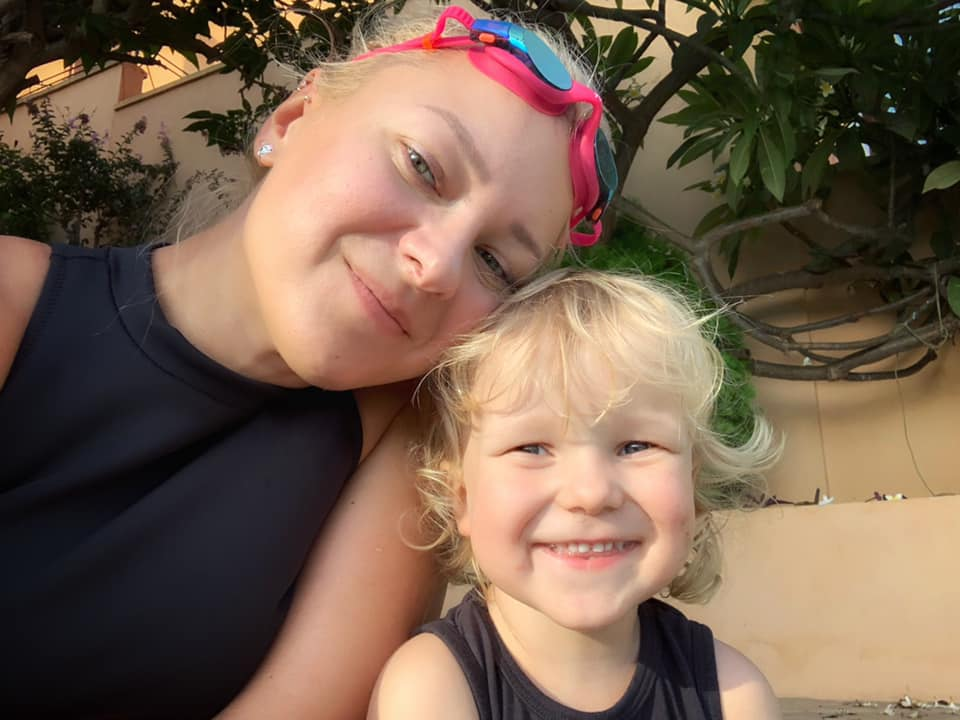

Etusivu | Harrastukset | Portfolio
Olen puolalainen ja minulla on myös suomalainen kansalaisuus. Olen asunut Suomessa noin 14 vuotta. Minulla on kaksi lasta, Leila ja Eric.
Olen töissä Siili Solutionsilla ja minun roolini on Head of Software Automation.
Työhöni kuuluu esimies-tehtävät, tiimin kompetenssien kehittäminen, koulutukset, myynti, sekä Diversity, Equity and Inclusion-toiminta.
Olen ollut aina kiinnostunut teknologiasta ja tietokoneista ja 15-vuotiaana rakensin ensimmäisen tietokoneeni from scratch.
Valitettavasti 20 vuotta sitten, kun valmistuin lukiosta Puolassa, ei vielä ollut tavallista naisille opiskella tietotekniikkaa.
Tein silloin päätöksen että opiskelen saksan kielitiedettä. Opiskelun aikana työskentelin kääntäjänä Münchenissä.
Vuonna 2007 valmistuin ja sain ainutlaatuisen työtarjouksen Suomesta ja päätin muuttaa Helsinkiin. Minun ensimmäinen työni IT-alla oli ohjelmistotestaaja.
14 vuotta uraa on mennyt nopeasti ja siinä aikana olen ollut eri konsultti-tehtävissä mukana, laadunvarmistuksen ja testiautomaation puolella.
Viime 5 vuotta olen tehnyt pääsäntöisesti tiimivetäjän töitä. Tavoitteeni on vihdoin toteuttaa omat haaveet ja valmistua tietotekniikan insinööriksi.
Harrastuksiin kuuluu polkupyöräily, lumilautailu, sekä kitaran soitto.
Siili Solutions | Talman Hiihtokeskus | Justin Guitar